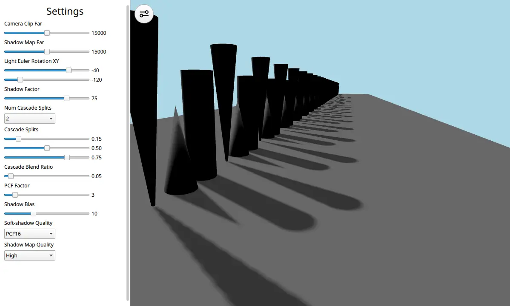

Qt Quick 3D - Cascaded Shadow Maps Example
Demonstrates cascaded shadow maps.

This example demonstrates how to use a DirectionalLight with cascaded shadow maps.
Let's have a look at the scene's QML code:
View3D { id: view x: settings.viewX y: 0 width: parent.width - settings.viewX height: parent.height camera: camera environment: SceneEnvironment { clearColor: "lightblue" backgroundMode: SceneEnvironment.Color antialiasingMode: SceneEnvironment.MSAA antialiasingQuality: SceneEnvironment.High } PerspectiveCamera { id: camera position: Qt.vector3d(458, 300, 515) eulerRotation: Qt.vector3d(-14, 19, 0) clipFar: settings.clipFar } DirectionalLight { visible: true castsShadow: true shadowFactor: settings.shadowFactor eulerRotation: settings.eulerRotation csmSplit1: settings.csmSplit1 csmSplit2: settings.csmSplit2 csmSplit3: settings.csmSplit3 csmNumSplits: settings.csmNumSplits shadowMapQuality: settings.shadowMapQuality csmBlendRatio: settings.csmBlendRatio shadowBias: settings.shadowBias pcfFactor: settings.pcfFactor softShadowQuality: settings.softShadowQuality shadowMapFar: settings.shadowMapFar lockShadowmapTexels: settings.lockShadowmapTexels } Model { id: ground source: "#Cube" scale: Qt.vector3d(25, 0.01, 135) z: -5500 materials: PrincipledMaterial { baseColor: "gray" } castsShadows: false } Node { id: shapeSpawner Component.onCompleted: { var conesAndCylinderTrio = Qt.createComponent("ConesAndCylinderTrio.qml") var z_pos = 0 for (var i = 0; i < 25; i++) { conesAndCylinderTrio.incubateObject(shapeSpawner, { "z_positions": [ z_pos, z_pos - 125, z_pos - 250 ]}) z_pos -= 450 } } } }
The scene consists of a DirectionalLight, a PerspectiveCamera, a floor Model, and a long array of cones and cylinder Models. This long array is laid out like this to show how cascades can help increase the graphical fidelity of the scene. With just one shadow map it will cause artifacts but with cascades these can be remedied. The DirectionalLight contains a lot of properties that are tweakable through a settings pane in the UI.
The reader is encouraged to see the Shadow Mapping article for more information on the different properties and to try out the example to see how they interact.